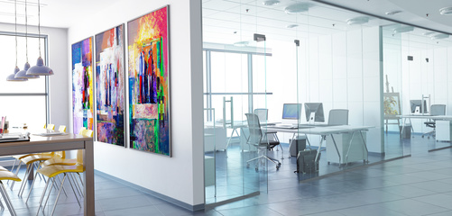

Gruselige Bürohelfer – Weg mit der Verschwendung
Als ich neulich dieses Plakat gesehen habe, hat es mich ordentlich gegruselt. Mein ersten Gedanken: Häßlich, altmodisch und Verschwendung pur!

Wenn Sie verstehen wollen, was meine Arbeit, meinen Anspruch ausmacht, dann müssen Sie das, war diese Werbung anpreist, nur ins Gegenteil verkehren.
Ein fensterloses Büro? Nein, danke!
Nicht nur Zimmerpflanzen, auch Menschen brauchen Licht zum Gedeihen. Viel Licht! Tageslicht! Fensterlosigkeit drückt erst die Stimmung und dann Qualität und Effizienz der Arbeit.
Ein Büro mit vielen, offenen Arbeitsplätzen? Nein, danke!
Das dargestellte Büro mit seinen wenig getrennten, dich beieinander stehenden Arbeitsplätzen ist der Konzentration abträglich. Es lädt zu Gesprächen über Tische hinweg ein, es lässt alle an den Telefonaten des nächsten Teilhaben. Unterbrechungen werden durch „Barrierefreiheit“ gefördert. So entsteht kein Fokus. Das ist die Umgebung, die Mitarbeiter zwingt, morgens sehr früh zu kommen oder abends lange zu bleiben, um endlich mal etwas zu schaffen. So entstehen nicht nur unnötige Überstunden, das schlägt auch auf die Stimmung. Qualität und Effizienz der Arbeit sinken.
Ein Büro mit Aktenschränken?
Nicht, wenn es sich vermeiden lässt. Aktenschränke sind Orte, die heute durch ihre pure Existenz Verschwendung erzeugen:
- Aktenschränke stehen an einem zentralen Ort, um von allen gut erreichbar zu sein. Das bedeutet im Umkehrschluss jedoch, dass Einzelne sie schlechte erreichen können, als wenn die Aktenschränke direkt bei ihrem Schreibtisch stehen würden. Es kostet sie also Zeit, um etwas im Aktenschrank abzulegen oder von dort zu holen. Das ist pure Verschwendung in Zeiten von elektronischen Ablagen wie Dateiservern, Dropbox, Content Management System, Evernote, Wiki, Branchensoftware usw. usf. Denn diese elektronischen Ablagen sind gleichermaßen zentral wie unmittelbar erreichbar an jedem Arbeitsplatz. Ein Mausklick genügt.
- Aktenschränke erlauben nur eine Ordnung. Man muss sich entscheiden, ob man Dokumente z.B. nach Projekt oder Kontakt oder Nummer oder Inhalt ablegt. Das führt einerseits immer wieder zu Konflikten beim Suchen (Verschwendung!), wenn der Ablegende ein Ordnungskriterium gewählt hat, die Suchende jedoch von einem anderen ausgeht. Andererseits führt es dazu, dass Dokumente kopiert und mehrfach abgelegt werden (Verschwendung!), um solche Konflikte von vornherein zu vermeiden. Das kostet aber zusätzlichen Aufwand und führt am Ende zu Inkonsistenzen in den Kopien, wenn daran weitergearbeitet werden sollte. Mit elektronischen Ablagen gibt es diese Probleme hingegen nicht. Dort können Dokumente in mehreren Ordnungen gleichzeitig einsortiert sein und existieren trotzdem nur ein Mal.
Akten stapeln? Nein, danke!
Denn jeder Aktenstapel an einem Ort macht die darin enthaltenen Informationen unzugänglich an anderen Orten. „Wo ist denn nun wieder der Vorgang?“ ist bei Aktenstapeln eine typische Frage, die zu Verschwendung führt: die Akten werden gesucht. Das kostet Zeit, aber vielleicht noch schlimmer, das leistet der Entstehung von Wissensinseln Vorschub. Denn durch das Horten von Akten wird Zugang zu Informationen erschwert, der spätestens dann zu einem Problem wird, wenn der Hortende durch Krankheit nicht zur Verfügung steht. Dann müssen Vorgänge zum Stillstand kommen, weil sie für andere nicht verfügbar sind. Aktenstapel bringen die Arbeit ins Stocken. Produktivität sieht anders aus.
Mit digitalen Akten ist das anders. Die sind qua ihrer Immaterialität nicht an einen Ort gebunden, also stets für alle verfügbar. Niemand muss in andere Büros eindringen, um Informationen aus tiefliegenden Aktensedimentschichten zu extrahieren. Digitale Akten bedeuten „information at your fingertips“, wie es Microsoft früher formuliert hat. So wird Arbeitsfluss erhalten, so wird es leichter gemacht, neue Mitarbeiter up-to-speed zu bringen.
Akten durch die Gegend tragen? Nein, danke!
Bewegung ist wichtig. Aber Akten schleppen halte ich für keine löbliche Fitnessübung im Büro. Das ist Verschwendung pur. Genauso wie das Austragen von Post.
Um Akten dort zu haben, wo sie gebraucht werden, ist nur nötig, sie zu digitalisieren. Abgelegt in einem Werkzeug wie Dateisystem, Dokumenten Management System usw. usf. stehen sie immer jederzeit überall zur Verfügung – sogar unterwegs, wenn man das will. Ich zum Beispiel könnte allein mit meinem iPhone ausgestattet in einem Café in Hamburg, München, Wien sitzen und innerhalb von wenigen Sekunden das Protokoll meines letzten Besuchs bei einem Kunden aufrufen oder meine Umsatzentwicklung des Jahres 2016 betrachten. Ganz zu schweigen von meiner kompletten Bibliothek, die inzwischen elektronisch ist und mich insofern ständig begleitet.
Papieraktenberge, Papieraktenschränke und fensterarm triste Großraumbüros sind für mich Symptome überholter Vorstellungen von Produktivität. Vielleicht war es ja mal in den 1930er oder 1960er so, dass dadurch irgendetwas im Büro besser funktionierte. Mag sein. Aber heute ist das definitiv nicht mehr so. Heute produzieren dererlei Büroausstattungen pure Verschwendung. Sie kosten Zeit und Geld und schlagen aufs Gemüt. Entspannt und freudvoll kann mit ihnen nicht die Leistung erbracht werden, um die allerorten so gerungen wird.
Überhaupt ein festes Büro? Nein, danke!
Warum sollten Mitarbeiter im mehr oder weniger feschen Dress überhaupt gezwungen werden, in ein Büro zu kommen? Ein Monteur, der eine Heizung repariert, muss am Ort der Heizung sein. Ein Polizist muss am Unfallort sein, um die Sachlage zu beurteilen. Ein Pfleger muss am Ort des Patienten sein, um ihn zu versorgen. Aber warum sollte ein Buchhalter im Büro erscheinen, ein Sachbearbeiter in die Stadt zu einem Arbeitsplatz pendeln, eine Marketingangestellte neben ihren Kollegen sitzen? Das ist für die Sache, d.h. die Produktion von guten Arbeitsergebnissen, nämlich nicht mehr nötig oder zumindest viel seltener nötig.
Büroarbeit ist im Wesentlichen Wissensarbeit, es geht also um das, was im Kopf ist. Der Ort des Kopfes bzw. der Ort der Daten, die er mit seinem Wissen bearbeiten soll, ist daher entscheidend. Und dieser Ort ist… überall. Digitale Dokumente sind dort, wo man sie braucht. Sie fließen, wie man es will. Sie folgen zum Arbeitsplatz. Ein Computer mit Internetzugang ist alles, was man dazu braucht.
Aber man muss sich doch zwischendurch immer wieder mit Kollegen oder Kunden abstimmen? Das ist doch kein Problem mehr: Telefon, Email, Chat, Videokonferenz, online Whiteboard, online Aufgabenbretter, Wiki, geteilte Kalender… Der Kollaborationswerkzeuge sind viele. Physische Nähe ist nur in den seltensten Fällen noch nötig. Das macht Büros selbst zu Verschwendungen. Warum diesen Platz vorhalten, warum weitere Infrastruktur darum ranken, warum Mitarbeiter zu Pendelfahrten zwingen? Für die zu erledigende Arbeit ist das nicht mehr notwendig. Oder wenn ein persönliches Treffen doch mal günstig erscheint, dann wird es ad hoc vereinbart. Die dafür nötigen Räumlichkeiten lassen sich allerorten kurzfristig mieten (variable Kosten statt Fixkosten!).
Mit digitalen Akten und elektronischen Werkzeugen lässt sich die Lebensqualität und dadurch auch die Arbeitsqualität massiv steigern.
Deshalb: Falls Sie dieses Plakat oder Werbung für Ähnliches sehen sollten, nehmen Sie es als Anlass, über die Praktiken in Ihrem Büro zu reflektieren. Büroarbeit funktioniert wunderbar ohne die angepriesenen „Bürohelfer“. So wäre es doch viel schöner, oder?

Weitere Artikel

Digitale Tools für Zusammenarbeit im Office
E-Mail, Digitale Ablage und eine Branchensoftware sind schon lange nicht mehr genug für effiziente Zusammenarbeit. Doch bevor Sie sich in einem Dschungel an digitalen Werkzeugen verlieren, sollten Sie sich über die Systematik …

Veränderung braucht Gewohnheit
Sowohl im Berufs-als auch im Privatleben sind wir ständig im Veränderungsmodus. Manche Veränderungen wollen wir umsetzen, manche müssen wir mitmachen. Wir alles wissen, dass Veränderung nie leicht sind und je länger wir etwas auf …